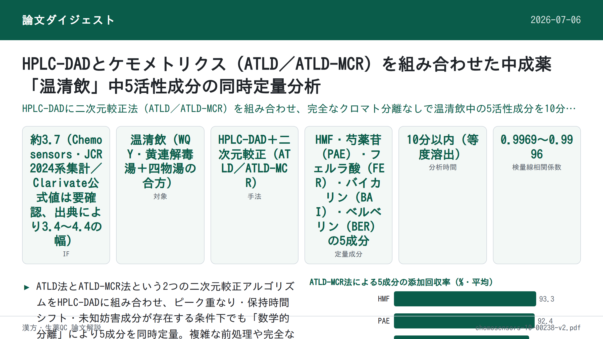
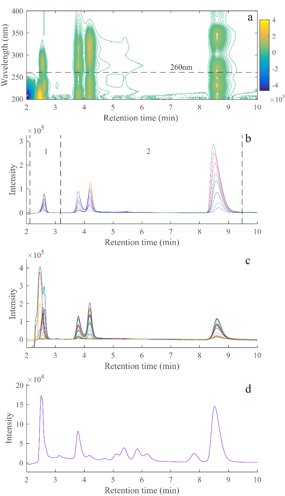

HPLC-DADとケモメトリクス（ATLD／ATLD-MCR）を組み合わせた中成薬「温清飲」中5活性成分の同時定量分析

<!-- 方針: ほぼ全訳＋必要に応じた補足。原文構成（Abstract→Introduction→Materials and Methods→Results and Discussion→Conclusions）に沿って訳出。「> 補足:」は訳者注。 -->
書誌情報
- 原題: High-Performance Liquid Chromatography–Diode Array Detection Combined with Chemometrics for Simultaneous Quantitative Analysis of Five Active Constituents in a Chinese Medicine Formula Wen-Qing-Yin
- 著者: Jun-Chen Chen, Hai-Long Wu（責任著者）, Tong Wang（責任著者）, Ming-Yue Dong, Yue Chen, Ru-Qin Yu
- 所属: 湖南大学（Hunan University）化学・化学工学院 化学/生物センシング・ケモメトリクス国家重点実験室（中国・長沙）
- 掲載: Chemosensors 2022, 10, 238. https://doi.org/10.3390/chemosensors10070238
- インパクトファクター: 約3.7（Chemosensors, MDPI。JCR 2024系の第三者集計値は3.4〜4.4と情報源により幅があり、Clarivate公式値は本稿では未確認のため要確認。捏造を避けるため範囲併記とする）
- 受理経過: 受領 2022-05-24 / 採録 2022-06-21 / 公開 2022-06-23（Academic Editor: Fabio Gosetti）
- 資金: 中国国家自然科学基金（No. 22174036・No. 21775039・No. 21575039）
- ライセンス: オープンアクセス（CC BY 4.0）。© 2022 by the authors, Licensee MDPI.
- キーワード: HPLC-DAD／多変量較正／二次的優位性（second-order advantage）／中成薬／温清飲
補足: 温清飲（Wen-Qing-Yin, WQY）は、黄連解毒湯（Huang Lian Jie Du Tang：黄連・黄芩・黄柏・山梔子）と四物湯（Si Wu Tang：当帰・白芍・熟地黄・川芎）を合方した処方であり、日本の漢方（津村順天堂の医療用漢方製剤にも収載）でもよく知られた構成である。原文でも構成生薬として Radix Angelicae Sinensis（当帰）・Radix Paeoniae Alba（白芍）・Radix Rehmanniae Praeparata（熟地黄）・Rhizoma Chuanxiong（川芎）・Rhizoma Coptidis（黄連）・Radix Scutellariae（黄芩）・Cortex Phellodendri（黄柏）・Fructus Gardeniae（山梔子）の8生薬が挙げられている。本論文はこの処方中の指標成分5種を、完全分離を要さない「数学的分離」（二次元較正）で同時定量する分析戦略を扱う。
要旨（Abstract）
本研究では、高速液体クロマトグラフィー–フォトダイオードアレイ検出（HPLC-DAD）とケモメトリクス手法を組み合わせた簡便な分析戦略を開発し、中成薬・温清飲（WQY）中の5-ヒドロキシメチル-2-フルフラール（HMF）・芍薬苷（paeoniflorin, PAE）・フェルラ酸（ferulic acid, FER）・バイカリン（baicalin, BAI）・ベルベリン（berberine, BER）の同時定量を行った。交互三線形分解（alternating trilinear decomposition, ATLD）アルゴリズムと、交互三線形分解支援型多変量曲線分解（ATLD assisted multivariate curve resolution, ATLD-MCR）アルゴリズムを用い、保持時間シフト・溶媒ピーク・ピーク重なり・未知妨害成分が存在する条件下でも、5種の標的分析対象物の分離と迅速な定量を実現した。すべての分析対象物は10分以内に溶出し、検量セットの線形相関係数は0.9969〜0.9996の範囲であった。加えて、ATLD法とATLD-MCR法によって得られた5活性化合物の平均回収率は、それぞれ91.8〜112.5%、88.6〜101.6%の範囲であった。提案手法の正確性・信頼性を検討するため、検出限界（LOD）・定量限界（LOQ）・感度（sensitivity, SEN）・選択性（selectivity, SEL）を含む分析能力指標（figures of merit）を算出した。提案した分析戦略は迅速・簡便・高感度という利点を持ち、WQYの定性・定量分析に利用でき、伝統中医薬（TCM）処方の品質モニタリングに実行可能な選択肢を提供する。
1. 序論（Introduction）
伝統中医薬（TCM）は主に薬用植物などの天然薬物に由来し、その加工製品は低毒性・良好な薬効から広く注目されている。TCMは多成分を含み、活性成分の含量がその品質・有効性に影響する。したがって、TCM中の活性成分含量をモニタリングする適切な手法の開発は非常に重要である。
温清飲（WQY）は伝統中医薬の処方であり、黄連解毒湯（Huang Lian Jie Du Tang）と四物湯（Si Wu Tang）からなり、当帰（Radix Angelicae Sinensis）・白芍（Radix Paeoniae Alba）・熟地黄（Radix Rehmanniae Praeparata）・川芎（Rhizoma Chuanxiong）・黄連（Rhizoma Coptidis）・黄芩（Radix Scutellariae）・黄柏（Cortex Phellodendri）・山梔子（Fructus Gardeniae）を含む。既往の研究によれば、アルカロイド類・フラボノイド類・テルペン配糖体類・イリドイド配糖体類が温清飲の主要成分である[1,2]。研究により、抗酸化[3–5]・抗潰瘍[6–8]・抗炎症[9–12]・抗菌[13–15]・抗がん[16–18]作用が認められており、婦人科出血性疾患・皮膚疾患・再発性アフタ性潰瘍などの治療に用いられている[19]。現在、TCM中の活性成分の同時定量には、超高速液体クロマトグラフィー、高速液体クロマトグラフィー（HPLC）、キャピラリー電気泳動と、MS・ダイオードアレイ検出器・UVなどとの組み合わせを含む多くの手法が開発されている[20–24]。
これらの手法の中で、高速液体クロマトグラフィー–ダイオードアレイ検出（HPLC-DAD）は、優れた分離能と高い安定性から最も広く用いられている。しかし、TCMは類似・複雑な構造を持つため、従来のHPLC法では、標的分析対象物の完全な分離とバックグラウンド妨害の回避のために複雑な試料前処理が必要になることが多い。実験条件の最適化には多くの時間がかかり、より長い溶出時間を要する。また、実試料のバックグラウンド妨害は常に変化する。同時に、ベースラインシフトと時間シフトが分析結果の正確性に影響する。
5-ヒドロキシメチル-2-フルフラール（HMF）・芍薬苷（PAE）・フェルラ酸（FER）・バイカリン（BAI）・ベルベリン（BER）は温清飲の指標成分である[3,25–29]。5種の分析対象物の具体的な物理化学的情報はTable S1（補足資料）に示されている。現在、これらの化合物の同時定量分析についての報告は少ない。既報の文献によれば、クロマトグラフィー分析には30分以上を要し[30,31]、非常に時間がかかる。したがって、上記の課題を解決するより効率的な分析戦略を見出すことが急務である。近年、ケモメトリクスの多変量較正がクロマトグラフィー分析に広く用いられている。中でも二次較正（second-order calibration）は「数学的分離」を用いて多くの複雑な問題をうまく速やかに解決してきた。二次較正法の「二次的優位性（second-order advantage）」により、様々な未知妨害成分が存在する場合でも複数の標的分析対象物を正確に定量できる[32]。
そこで本研究では、交互三線形分解（ATLD）アルゴリズムと交互三線形分解支援型多変量曲線分解（ATLD-MCR）アルゴリズムという2つの二次較正アルゴリズムをHPLC-DADと組み合わせ、WQY中の5活性成分の同時・迅速な定量を行った。提案戦略は複雑な分離・精製工程を削減し、時間シフト・溶媒ピーク・クロマトグラフィーピーク重なりの妨害を克服した。最後に、2アルゴリズムの性能を簡潔に比較した。
補足: 「二次較正（second-order calibration）」とは、クロマトグラフィーの溶出時間軸とDADのスペクトル（波長）軸という2つの次元の情報（三方向データ配列）を同時に利用して、化学的な完全分離を行わなくても目的成分の情報を数学的に抽出する手法。これにより、ピークが重なっていたり未知の妨害成分が混在していても、目的成分固有のシグナルを分離・定量できる（「二次的優位性」と呼ばれる性質）。ATLDは1996年にWuらが提案した手法[33]、ATLD-MCRは2019年にWangらが提案した拡張手法[35]で、保持時間シフトへの対応力を高めている。
2. 材料と方法（Materials and Methods）
2.1. 試薬
5-ヒドロキシメチル-2-フルフラール・芍薬苷・フェルラ酸・バイカリン・ベルベリンの分析用標準品（純度98.0%以上）はMacklin（中国・上海）から購入した。超純水（18.2 MΩcm）はMilli-Q水精製システム（Millipore, Bedford, MA, USA）で調製した。HPLCグレードのアセトニトリルとメタノールはSigma-Aldrich（St. Louis, MO, USA）から、HPLCグレードのギ酸はThermo Fisher Scientific（Waltham, MA, USA）から入手した。
適量の標準品をメタノールに溶解してストック溶液を調製し、メタノールで希釈して最終濃度0.4〜2.0 µg mL⁻¹の標準作業溶液を新たに調製した。すべてのストック溶液は使用まで4℃の冷蔵庫で保存した。
2.2. クロマトグラフィー装置と条件
本研究は、ダイオードアレイ検出器・20 µLループ・脱気装置・4元ポンプを備えたLC-20AT液体クロマトグラフシステム（島津製作所、日本）で実施した。クロマトグラフィー分離にはWondaSil™ C18カラム（5 µm、200 mm × 4.6 mm）を用い、カラム温度30℃、カラム圧力6.7 MPaとした。流速は1.00 mL min⁻¹、注入量は20 µLとした。分離能とピーク対称性を高めるため、水相に少量のギ酸（最適濃度1.0 mL L⁻¹）を添加した。移動相は0.1%ギ酸水溶液（溶媒A）とアセトニトリル溶液（溶媒B）から構成し、30% Bの等度（isocratic）溶出条件下で、すべての分析対象物が等尺（isometric）溶出モードで10分以内に溶出した。
2.3. 試料調製手順
WQY市販試料は3社から購入した：Sun Ten Pharmaceutical Co., Ltd.（台北、中国台湾）、Kaiser Pharmaceutical Co., Ltd.（台南、中国台湾）、Sheng Chang Co., Ltd.（台北、中国台湾）で、本文中ではそれぞれQ01〜Q03と表記する。まずWQY粉末試料1.00 gを精秤し、HPLCグレードのメタノール10 mLに溶解した。次に混合物を30分間超音波処理し、12時間静置して完全に抽出した後、0.22 µmナイロンフィルターでろ過してからHPLC-DAD分析に供した。
検量用試料（C01〜C08）は、作業溶液を純メタノール溶液で10.0 mL褐色メスフラスコに希釈して調製した。検量セットの濃度設計は、潜在的な共線性要因を最小化するため一様計画法（uniform design）U8*(8⁵)を採用した。添加予測試料3試料は、処理済みのWQY実試料（Sun Ten Pharmaceutical Co., Ltd.、台北製）と適量の作業溶液を10 mLメスフラスコに移し、メタノールで希釈して調製した。WQY実試料中のBAIとBERの濃度がHMF・PAE・FERの濃度よりはるかに高いことを考慮し、WQY実試料を2種類の濃度で添加予測試料に加えた：HMF・PAE・FERの検出用に20倍希釈（P01〜P03）、BAI・BERの検出用に50倍希釈（P04〜P06）とした。検量セット試料の濃度はTable S2（補足資料）に示されている。
2.4. 理論
2.4.1. 三線形成分モデル
各試料について、I個の溶出時間走査点とJ個の波長点からなる二次元データ行列が得られる。すべてのK個の試料（検量用試料・添加予測試料・実試料を含む）が同一条件下で測定された後、これらの二次元データ行列は試料次元に沿って順に積み重ねられ、三方向配列X（I × J × K）を形成する。配列Xは次の数学的関係で表せる：
x_ijk = Σ(n=1〜N) a_in b_jn c_kn + e_ijk （i = 1,…,I; j = 1,…,J; k = 1,…,K）
ここでNは因子の総数（対象分析対象物・共溶出妨害化合物・バックグラウンド・ベースラインシフト・ノイズを含む）を表し、x_ijkは三方向配列X（I × J × K）の要素で、試料kの溶出時間iおよびスペクトルチャネルJにおける応答値を表す。a_in・b_jn・c_kn・e_ijkは、それぞれ正規化クロマトグラフィー行列A（I × N）・正規化UVスペクトル行列B（J × N）・相対濃度行列C（K × N）の対応要素、および三方向残差配列E（I × J × K）の要素である。
補足: 詳細な行列演算（Moore–Penrose一般逆行列を用いた反復最小化式など）はPDF抽出時に添字・上付き文字が崩れて正確な再現が困難なため、数式の厳密な表記は「原文参照」とする。以下は原文の説明文を忠実に訳出したもの。
2.4.2. ATLDアルゴリズム
ATLDアルゴリズムは、1996年にWuらによって提案された汎用の制約なし交互反復アルゴリズムであり[33]、推定される因子数に対して感度が低い（鈍感である）という特徴を持つ。また、分割行列の三線形構造モデルを計算に用いるため収束が速いという利点もある[32]。したがってATLDは、HPLC-DAD・LC-MS・液体クロマトグラフィー–蛍光検出データのような大規模データの処理に非常に適している。このアルゴリズムを二次クロマトグラフィーデータの処理に用いる場合、因子数を増やすことでバックグラウンド情報を適合させることができ、ベースラインシフトを妨害成分の一部として除去できる[34]。同時に、ATLDアルゴリズムは軽微な時間シフトを許容できる。ただし、時間シフトが深刻な場合には適さない。ATLDアルゴリズムは、特異値分解に基づくMoore–Penrose一般逆行列を用いて、以下の3つの目的関数を交互に最小化することで、定性行列（AおよびB）と相対濃度行列（C）を得る（具体的な数式は文献[33]を参照）。
2.4.3. ATLD-MCRアルゴリズム
ATLD-MCRアルゴリズムは、2019年にWangらによって提案された新しいアルゴリズムであり[35]、液体クロマトグラフィーデータにおける保持時間シフトの問題をうまく解決できる。その概略は次のとおりである：まずATLDを用いて時間シフトのあるデータを適合させ、近似値と初期スペクトル行列B_iniを得る。次に、MCR戦略に基づき、最適化された最小二乗計算を通じて各試料の保持時間プロファイル行列A_kを得る（式(5)参照）。X..kは各試料のスライス行列である。最終的に、定性情報（A_kおよびB）と定量情報（C）を、後続の式によって得る（式(6)・式(7)。数式の詳細な添字表記は原文参照）。ここで、+・×はそれぞれMoore–Penrose一般逆行列・アダマール積を、−1は行列の逆行列を表し、（.）は角括弧内の正方行列の対角要素を抽出して列ベクトルを形成することを示す。
3. 結果と考察（Results and Discussion）
3.1. HPLC-DAD実験の一般的考察
第6番目の混合標準試料（C06）のスペクトルプロファイルとクロマトグラフィープロファイルをFigure 1a・cに示す。図から分かるように、5種の標的分析対象物は10分以内に完全に溶出し、すべてのピークはシャープであった。しかし、HMFとPAEのクロマトグラフィーピークは急速に溶出する際に著しく重なり合い、あたかも1つの応答ピークしかないように見え、溶媒ピークの影響も大きく受けていた。FERとBAIも共溶出していた。Figure 1dは実試料の260 nmにおける溶出時間プロファイルを示す。未知の化合物や妨害成分が標的分析対象物のピークと重なっている。これは、同一条件下では古典的HPLC法で満足のいく汎用的な分離結果を得ることが困難であることを示している。しかし、HPLC-DADと二次較正法の組み合わせは、上記の問題の解決に優れている。
Figure 1bから分かるように、同日測定では顕著なピークシフトや深刻な時間シフトは観察されなかった。同時に、ATLDアルゴリズムはベースラインシフトを処理でき、軽微な時間シフトを許容できる[34]。また、時間シフトが結果の正確性に影響する場合には、ATLD-MCRアルゴリズムを用いてこの影響を除去できる。
無効な情報を除去しより良い分解を達成するため、各試料の溶出時間範囲に従って2つの異なる部分領域に分割した。HMFとPAEは第1領域に含まれ、第2領域にはBAI・FER・BERの3種の標的分析対象物が含まれる。本研究では、推定成分数Nは、選択した領域内に（分析対象物と妨害シグナルを含む）N個の異なるシグナルが存在することを示す。2つの三方向部分領域の詳細はTable S3（補足資料）にまとめられている。

3.2. WQY中の5活性成分の定量
Figure 2・3に示すとおり、正規化クロマトグラム（a1, a2）・正規化スペクトログラム（b1, b2）・相対濃度プロファイル（c1, c2）は、2つの三方向部分配列からATLDアルゴリズムとATLD-MCRアルゴリズムによって良好に分解された。溶媒ピーク・ピーク重なり・未知成分の共溶出という妨害が存在しても、情報量の豊富なHPLC-DADデータ配列から、分析対象物の純粋なクロマトグラムとスペクトルといった目的情報を首尾よく抽出できた。ATLDアルゴリズムとATLD-MCRアルゴリズムの両方について、分解されたクロマトグラフィープロファイルとスペクトルプロファイルは対応する実際のプロファイルとかなり一致していた。特にHMFとPAEについては、類似した保持時間と溶媒ピークからの妨害という条件下でも満足のいく定性結果が得られた。


3.3. 正確性と精度
検量用試料中の分析対象物の実濃度に対する、ピーク高（相対濃度C）の対応列の線形回帰により、擬一変量検量線（pseudo-univariate calibration curves）を構築でき、その後、確立した線形回帰式によって未知試料中の目的成分の絶対濃度を得ることができる。標的分析対象物の直線範囲と回帰式はTable S4（補足資料）に、ATLD法とATLD-MCR法に基づく5標的分析対象物の予測結果はTable 1にまとめられている。また、6個の添加予測試料の詳細な添加濃度と回収率はTable S5（補足資料）に示されている。
Table 1. ATLD法とATLD-MCR法を用いたWQY市販製品の添加予測試料（P01〜06）における5標的分析対象物の正確性。
| 統計量 | HMF | PAE | FER | BAI | BER |
|---|---|---|---|---|---|
| ATLD法 | |||||
| 相関係数 r | 0.9991 | 0.9993 | 0.9996 | 0.9969 | 0.9978 |
| 平均回収率±SD（%） | 94.7±2.5 | 91.8±5.0 | 93.9±3.5 | 104.3±9.7 | 112.5±5.1 |
| RMSEP（µg mL⁻¹） | 0.20 | 2.07 | 0.38 | 3.94 | 4.05 |
| ATLD-MCR法 | |||||
| 相関係数 r | 0.9992 | 0.9995 | 0.9993 | 0.9985 | 0.9973 |
| 平均回収率±SD（%） | 93.3±1.4 | 92.4±5.7 | 88.6±3.5 | 101.6±9.9 | 96.8±10.3 |
| RMSEP（µg mL⁻¹） | 0.30 | 1.85 | 0.69 | 3.04 | 1.53 |
r：相関係数。AVG±S.D.%：添加回収率の平均値±標準偏差。RMSEP：予測値の相対二乗平均平方根誤差（RMSEP = √[Σ(c_pre − c_act)² / N_p] × 100%、c_preとc_actはそれぞれ予測濃度と実際濃度、N_pは予測試料数）。
ATLDアルゴリズムでは、全分析対象物の平均回収率は91.8〜112.5%の範囲でSDは9.7%未満、分析対象物予測の相関係数（r）は0.9969〜0.9993の範囲、予測の相対二乗平均平方根誤差（RMSEP）は4.05 µg mL⁻¹未満であった。ATLD-MCRアルゴリズムでは、r値は0.9973〜0.9995の範囲でRMSEPは3.04 µg mL⁻¹未満、平均回収率は88.6〜101.6%の範囲でSDは10.3%未満であった。得られた結果は比較的近い値であった。ATLD-MCRのRMSEP値は小さく、すべての回収率が許容範囲内にあり、予測濃度が標準濃度と一致していることを示し、概ね満足のいく結果であった。
補足: 本文はATLD法のr範囲を「0.9969〜0.9993」と記しているが、Table 1のATLD法の値を見るとFERのrは0.9996であり、表中の実際の範囲は0.9969〜0.9996となる。この数値の食い違いは原文自体に存在するものであり、本解説では改変せず両方の記載をそのまま併記した（原文参照）。
3.4. 再現性（Repeatability and Reproducibility）
手法の再現性を検討するため、同一バッチのWQY実試料を同日に3回、および連続3日間にわたって分析し、日内（intra-day）精度と日間（inter-day）精度をRSD（%）として算出した。2種類のRSD（n = 3）はTable 2にまとめられている。
日内RSDと日間RSDはいずれもATLD-MCR法の方がATLD法より優れていた。特にBERについては、連続日の測定における深刻な時間シフト（Figure S1参照。補足資料）のため、ATLD法の日間RSDは40.8%に達した。最初の4種の分析対象物は速く溶出するため、軽微な時間ドリフトはATLDアルゴリズムによって妨害の一部として除去された。BERは最後に溶出する物質であり、生じた時間シフトは他のアルゴリズムで解決する必要があった。幸いにも、二次較正における保持時間シフトはATLD-MCRアルゴリズムによって効果的に処理された。さらに、日内RSDは通常、日間RSDより小さかった。
3.5. 分析能力指標（Analytical Figures of Merit）
提案した分析法の性能を評価するため、選択性（SEL）・感度（SEN）・検出限界（LOD）・定量限界（LOQ）を含む分析能力指標を算出し、Table 2にまとめた。分析能力指標の数学的理論はすでに詳細に議論されており、ここでは繰り返さない[36]。本実験では、SEN値はATLD法で1.04×10⁴〜1.24×10⁵ mAu mL µg⁻¹、ATLD-MCR法で7.74×10³〜7.93×10⁴ mAu mL µg⁻¹の範囲であり、各分析対象物のSEL値はATLD法・ATLD-MCR法でそれぞれ0.20〜0.56、0.13〜0.35の範囲であった。標的分析対象物のSEL値が低いのは、ピーク重なりと未知妨害成分の深刻な影響によるものであることに留意すべきである。ATLD法とATLD-MCR法のLOD範囲はそれぞれ0.07〜11.67 µg mL⁻¹、0.22〜4.53 µg mL⁻¹であった。見て分かるとおり、ATLDで得られたLOD値は、BERのLODが時間シフトの影響により検量用試料の最小濃度より低くなっている点を除き、概ね許容範囲内にあった。同時に、ATLD-MCRアルゴリズムで得られた結果は妥当かつ満足のいくものであった。
Table 2. ATLD法とATLD-MCR法を用いたWQY選択試料中5分析対象物の分析能力指標と精度。
| 統計パラメータ | HMF | PAE | FER | BAI | BER |
|---|---|---|---|---|---|
| ATLD法 | |||||
| 選択性 SEL | 0.49 | 0.52 | 0.56 | 0.43 | 0.20 |
| 感度 SEN（mL µg⁻¹） | 8.46×10⁴ | 1.04×10⁴ | 1.24×10⁵ | 3.00×10⁴ | 2.46×10⁴ |
| LOD（µg mL⁻¹） | 0.95 | 1.84 | 0.07 | 4.94 | 11.67 |
| LOQ（µg mL⁻¹） | 2.85 | 5.59 | 0.22 | 14.98 | 35.37 |
| 日内RSD（%、n=3） | 9.65 | 3.24 | 0.67 | 2.12 | 5.22 |
| 日間RSD（%、n=3） | 12.47 | 2.72 | 4.47 | 3.16 | 40.82 |
| ATLD-MCR法 | |||||
| 選択性 SEL | 0.15 | 0.23 | 0.35 | 0.13 | 0.19 |
| 感度 SEN（mL µg⁻¹） | 3.09×10⁴ | 7.74×10³ | 7.93×10⁴ | 9.11×10³ | 2.24×10⁴ |
| LOD（µg mL⁻¹） | 0.22 | 1.12 | 0.17 | 4.53 | 0.84 |
| LOQ（µg mL⁻¹） | 0.65 | 3.40 | 0.51 | 13.72 | 2.54 |
| 日内RSD（%、n=3） | 3.04 | 1.12 | 1.33 | 1.83 | 0.36 |
| 日間RSD（%、n=3） | 2.90 | 1.64 | 2.65 | 2.14 | 0.92 |
SEL・SEN・LOD・LOQの数式定義（分析対象物n番目に関する行列演算を含む）は原文参照（PDF抽出時に添字が崩れるため本解説では割愛）。σ_xは3種の非添加試料における分析対象物予測濃度の標準偏差、h₀はブランク試料におけるレバレッジ値を表す。
3.6. 二手法の評価
以上の考察から、時間シフトが比較的軽微な場合には、ATLDアルゴリズムとATLD-MCRアルゴリズムの結果のいずれも満足のいくものであることが分かる。両手法は両側対応t検定を用いて統計的に解析された。p値が0.05未満であれば有意差ありとした。Table S5（補足資料）にまとめられた解析結果によると、HMF・PAE・FER・BAIのp値はそれぞれ0.358、0.258、0.063、0.332であり、これら4種の分析対象物の結果に有意差がないことを示している。しかし、BERのp値は0.001であり、これは保持時間シフトの影響によるものである。他の統計パラメータも、時間シフトが存在する場合にATLD-MCRの方がより良い結果を得られることを示している。クロマトグラフィー分析において、溶出時間が十分短く保持時間シフトが深刻でない場合には、ATLDアルゴリズムを直接用いて良好な再現性・繰り返し性で分析できる。加えて、ATLD-MCRアルゴリズムは保持時間シフトの影響をうまく処理でき、HPLC-DAD法がWQY中の主要活性成分を正確に定量することを支援した。
3.7. 他のWQY試料の分析
ATLDアルゴリズムを用いて、保持時間シフトのある非三線形構造データを強制的に適合させる場合、一定水準の正確性を犠牲にすることになる[35]。そこで、他の2種の市販WQY試料中の主要活性成分を定量するため、ATLD-MCR戦略を適用した。対応する結果はTable S6（補足資料）にまとめられている。
補足: Table S6の具体的な数値（他2社の実試料含量）は補足資料に収載されており、本体PDFには含まれていない。個別の実測値は「原文（補足資料）参照」とする。
4. 結論（Conclusions）
本研究では、HPLC-DADと二次較正法を組み合わせたスマートな戦略を開発し、WQY中の5活性成分を同時かつ迅速に定量した。保持時間シフトを伴うクロマトグラフィーデータを解析する両手法の能力について、適切な考察を行った。提案戦略は、軽微な時間シフトを伴うクロマトグラフィーデータの分析において高感度・時間節約であり、すべての標的分析対象物は検量範囲内で良好な直線性を示した。さらに、ATLD-MCRアルゴリズムは深刻な時間シフトの問題も適切に解決した。本研究は温清飲を一例として取り上げたものであり、提案戦略が伝統中医薬製剤における活性成分の定量および品質モニタリングの信頼できるツールとして利用できることを示している。
補足資料（Supplementary Materials）: 以下は https://www.mdpi.com/article/10.3390/chemosensors10070238/s1 からダウンロード可能（本体PDFには含まれていない）：Figure S1（WQY実試料の連続3日間における260 nm溶出時間プロファイル）、Table S1（5分析対象物の具体的な物理化学的情報）、Table S2（検量用試料中5標的分析対象物の濃度）、Table S3（5標的分析対象物の2部分領域における溶出時間・スペクトル波長範囲、三方向配列の正確な分解のための推定成分数）、Table S4（5標的分析対象物の直線範囲・回帰式・相関係数r）、Table S5（6個の予測試料の添加濃度・回収率およびp値）、Table S6（ATLD-MCR法で得られた他2種のWQY市販製品中5分析対象物の濃度）。
著者貢献: J.-C.C.（構想・方法論・原案執筆・校閲編集）、H.-L.W.（構想・方法論・資金獲得）、T.W.（方法論・バリデーション・データキュレーション）、M.-Y.D.（バリデーション）、Y.C.（調査）、R.-Q.Y.（監修）。
利益相反: 著者らは利益相反がないことを宣言している。
訳者補足
補足（本論文の位置づけ）: 本論文は、指紋分析や多点定量ではなく、二次較正（second-order calibration）というケモメトリクスの数理的分離手法を主軸に置く点で、本サイトの他の多くのQC論文（UPLC/HPLC指紋＋QAMS＋多変量判別が主流）とはアプローチが異なる。前処理を簡略化し、等度溶出という単純なクロマト条件（10分以内）のままでも、ピーク重なり・保持時間シフト・未知妨害成分を数学的に解消できる点が眼目である。ATLD法は計算が速く軽微な時間シフトに強い一方、時間シフトが深刻な場合（本研究ではBERで顕著）にはATLD-MCR法の頑健性が優る、という使い分けの指針が実データ（日間RSD40.82%→大幅改善、対応t検定でp=0.001→有意差解消）で具体的に示されている。
補足（実務的示唆）: 温清飲は日本の医療用漢方製剤としても用いられる処方であり、黄連解毒湯由来のベルベリン・バイカリンと、四物湯由来の芍薬苷・フェルラ酸という出所の異なる指標成分を横断的に定量できる点は実務上の参考になる。ただし、本研究の実試料は3社のみ（Q01〜Q03）で、ロット間・産地間の品質ばらつきを網羅的に検証したものではない点には留意が必要（本サイトの指紋分析＋多ロット判別型の論文とは検証範囲が異なる）。また、二次較正アルゴリズムの適用には専用ソフトウェア・計算スキルが必要であり、日常的なQC試験室への実装には従来の外部標準法やQAMSに比べて技術的なハードルがある点も、導入検討時の留意点となる。